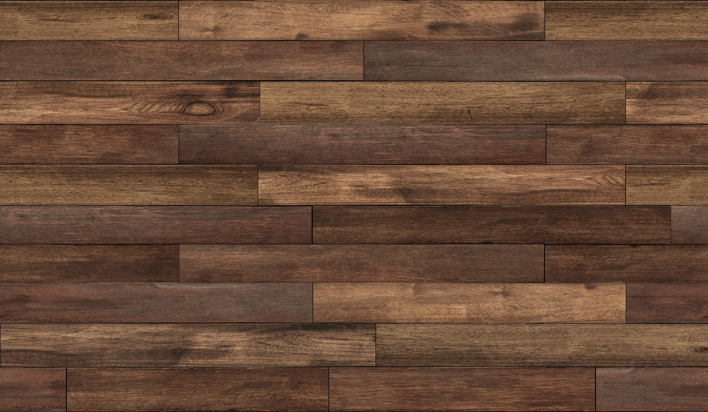
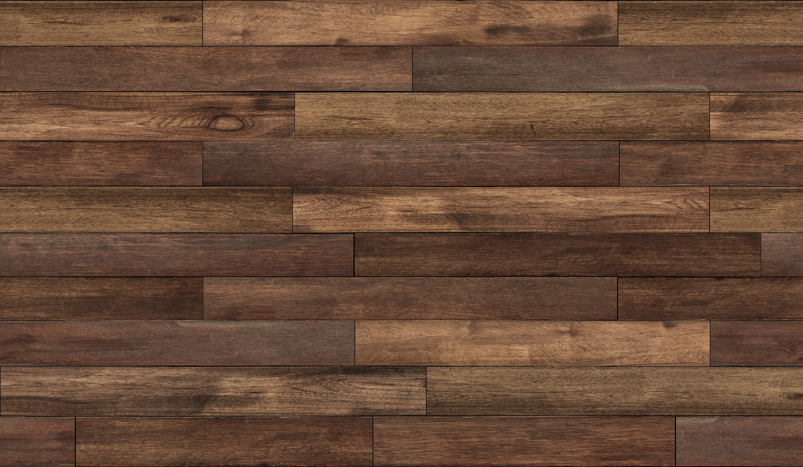

|
Controls
Note: Press any key for the textures to show up
| 1, 2 |
Change the texture of the wood floor |
| v |
Use per vertex shading |
| f |
Use per fragment shading |
| r, R |
Display the image (Reset to default) |
| s, S |
Display only the textured ball |
| c, C |
Display only the textured wood floor |
| x, y, z |
Rotate the individual texturized shape forward about the x, y, or z axis |
| X, Y, Z |
Rotate the individual texturized shape backward about the x, y, or z axis |
|
 
